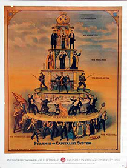

This page displays *all* news items from General, Legal, Public Interest, and Financial Office Workers Industrial Union 650.
For an overview of the IU 650's history and contact information, please visit our homepage.
Submitted on Mon, 08/29/2005 - 3:02pm
On August 15th, Fort McMurray Today ran the following article on the upcoming actions:
Alberta CLAC under fire as new group targets them
By RENATO GANDIA
To raise awareness of what they feel are unacceptable practices by the Christian Labour Association of Canada (CLAC) the Industrial Workers of the World (IWW) will be holding a rally in three Alberta cities, including Fort McMurray.
’The main point of this rally is to raise awareness and solidarity against CLAC,’ said Bryan Roberts an IWW delegate from Edmonton, today. Scheduled on Aug. 26, the rally will be held in front of the CLAC in the Bob Lamb Industry Education Centre office between 7:30 to 9:30 p.m. ’We just want to raise awareness that CLAC as a union does not really represent its rank and file workers,’ Roberts said.
Early in July, an estimated 4,000 union workers staged a rally here against the CLAC and on the issue of bringing temporary foreign workers to Fort McMurray. This time the focus of the rally will be more general and not just about foreign workers, said Roberts.
Submitted on Mon, 08/22/2005 - 1:33am
From the Industrial Worker - September 2005.
The IWW’s Scottish Parliament Job Branch has filed a strong protestagainst the Parliament’s decision to strip the Scottish Socialist Party members’ 14 staff of one month’s wages, noting that the decision – taken by the Labour Party majority – violates the workers’ fundamental labour rights.
The protest was filed jointly with the National Union of Journalists. The IWW and NUJ represent the 14 workers affected.
The issue arises from a decision to strip the SSP delegation of its salaries, facilities and support staff after the four Socialist parliamentarians protested within the chamber against a government ban on protests at the site of the G8 summit in Gleneagles despite parliamentary votes to allow demonstrations. Protests were subsequently allowed.
Neither the unions representing the affected workers nor the SSP, which employes them, were informed of or permitted to attend the meeting of the Scottish Parliament committees where the decision was taken, nor were the IWW or NUJ notified that action against our members was being considered.